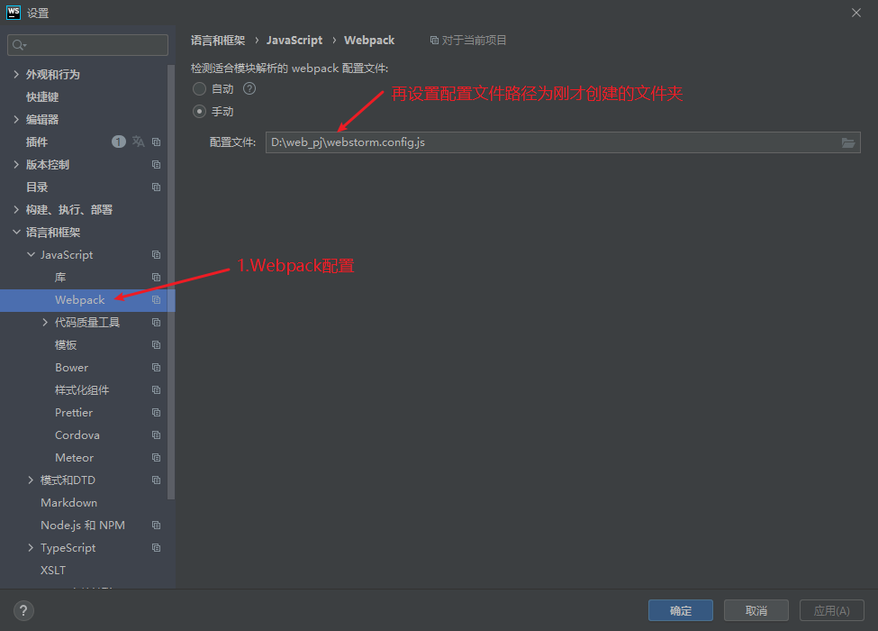

title: webstorm识别webpack别名
date: 2020-12-16 21:01:28
tags:
重装webstorm发现之前配置过的别名识别无了，跳转也跳转不了，在此记录一下
const path = require('path')
module.exports = {
context: path.resolve(__dirname, './'),
resolve: {
extensions: ['.js', '.vue', '.json'],
alias: {
'@': path.resolve('src'),
'@assets': path.resolve(__dirname, 'src/assets'),
"@components": path.resolve("src/components"),
}
}
}